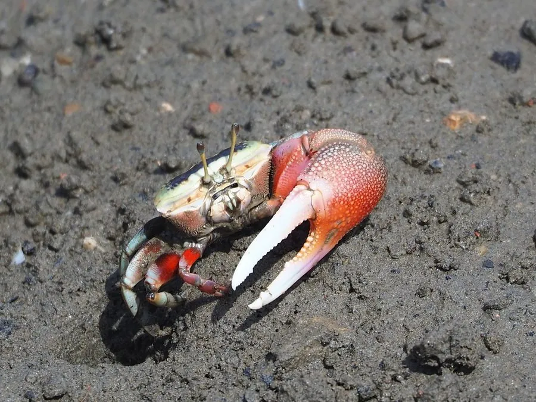

甲壳动物 · 动物界
弧边招潮蟹 Uca arcuata

雄蟹有一只特大螯足的小型滩涂蟹类，退潮时在泥滩上挥螯求偶，是红树林和河口湿地常见的代表性动物。
- 分类
- 门节肢动物门纲软甲纲目十足目科沙蟹科属招潮蟹属
- 栖息环境
- 河口、红树林和潮间带泥滩，退潮时出洞活动
- 地理分布
- 中国沿海、日本和东南亚沿海
- 保护级别
- 暂无评估；可作为湿地环境指示物种
物种志
弧边招潮蟹头胸甲宽而扁，前缘有凹槽，雄蟹一只螯足特别巨大，另一只很小，大螯表面有花纹；雌蟹两只螯都小。体色随环境变化，多为青灰、橙红或浅黄色。
它生活在河口、红树林和潮间带的泥滩，退潮时出洞活动，取食泥沙中的有机碎屑和藻类，雄蟹会高举大螯做求偶表演和威吓对手。涨潮时它们退回洞穴，用泥团堵住洞口。弧边招潮蟹分布于中国沿海、日本和东南亚，是滩涂生态系统中的常见物种，也是观察行为生态学的经典对象。它对环境变化敏感，可作为湿地健康的指示生物，红树林保护和减少污染对其种群至关重要。它们用泥团封洞，可以保持洞内湿润，避免身体脱水。
形态与习性
- 食性取食泥沙中的有机碎屑和藻类
- 体型头胸甲宽约 2–3 cm
- 特征雄蟹一只螯足特别巨大，雌蟹两只螯都小
- 行为雄蟹挥动大螯求偶和威吓对手
- 习性退潮出洞、涨潮堵洞，泥滩上常见
- 生态湿地健康的指示物种之一
趣味知识
- 雄招潮蟹的大螯比身体还大，挥动起来像在招唤潮水。
- 它们退潮时出来觅食，涨潮时用泥团把洞口堵住。
- 招潮蟹对污染和栖息地破坏敏感，可以用来反映湿地健康状况。